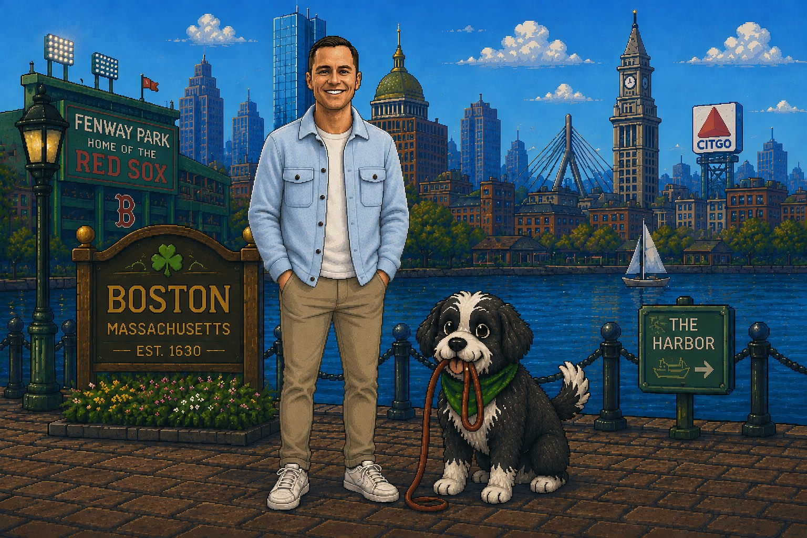

Matt’s Portfolio: The Game
Hi, I’m Matt. I’m a marketer focused on product storytelling, creative campaigns, and making complex technology interesting.
I built this little Boston adventure as a different way to explore some of my work.
Built with Claude Code · ChatGPT · GitHub · Vercel